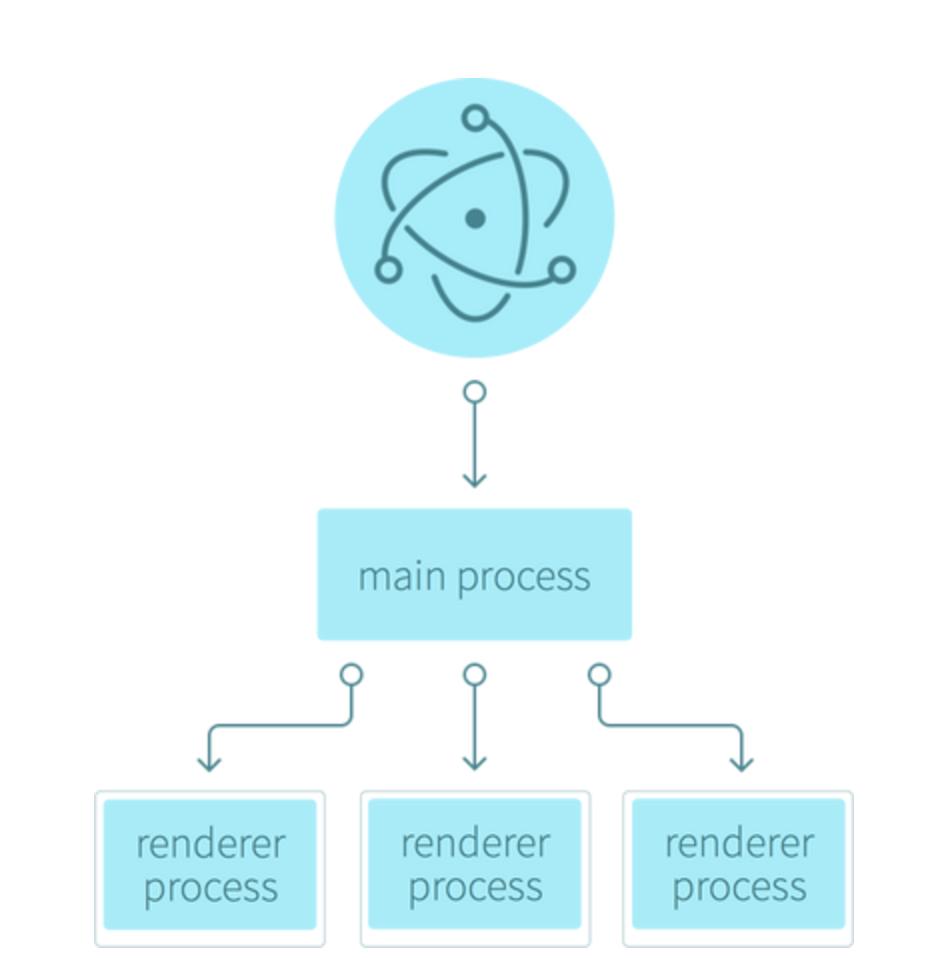

Quick Intro
Rob Pocklington
Full-stack developer my whole career
Java, Ruby, Groovy, Scala, Node + JS
Worked at MYOB, Sportsbet and Seek
Currently @ NAB in Docklands (Internet Banking)
Overview
News
Web pulse check
Electron
History and Architecture
Features + Benefits
A Real Example
Issues
Closing Thoughts
Web Pulse Check
Angular 2 - Google
React v15.4.0 - Facebook
Aurelia v1.07 - Rob Eisenberg
Web Pulse Check
Ionic v1.3 (Angular 1.5)
Nativescript v2.4.0 - Telerik
React-Native v0.37.0 - Facebook
Web Pulse Check (cont ...)
Arc welder App v54.5 (Android on Desktop)
NW.js v0.18.7
Electron v1.4.7
Electron - History
Invented by Github in 2013 (previously atom-shell)
Allows developers to create cross-platform desktop apps with web technologies
Electron - Architecture
Server-side Node.js + Chromium browser

Electron (cont ...)
Abstracting Too Much?
GWT / EXT.js
Cordova / Phonegap / Ionic
Benefits
Multi-platform (Linux + Windows + Mac OSX + ARM)
Combine fast native binaries with familiar web code
Frontend framework agnostic (Webpack + ES6 recommended)
Benefits (cont ...)
Builds off a stable base (Chromium, Node.js)
Users download and install
(just like the old days!)
Full Node.js on the client (endless possibilities)
Can leverage any existing Node.js library
Main Features
Superset of browser features
IndexedDB, Local Storage etc.
System-level native access (file / database / device)
No CORS issues / browser sandboxing
Main Features (cont ...)
Right-click context menu support
OS Menubar / Windows / Drag + drop
System tray + Taskbar (eg. Slack / Rdio)
Auto-updates (or prompted updates)
Crash-reporting
Flash plugin support (via pepper-plugin)
Testing
Mocha / Jasmine (it's just Node.js)
Spectron for E2E testing
User Issues
Users install from the Internet (safe?)
No fine-grained user permissions (eg. file / camera)
No brower sandbox, no warranty
rm -rf ~
Building Issues
Icons, iCONS and icons
Code signing (optional but recommended)
CI / CD - Travis / Appveyor for Windows
Hosting binaries
Developer Issues
Communications between main and render threads
(think: web workers)
Supporting updates / multi-versions / data-migrations
Testing builds on multiple platforms
Source code security
Closing thoughts
Electron gives a great native experience
Within reach for most Node.js developers
Growing demand for multi-skilled JS developers
Web or native, component-based designs win
ES6 + pure Javascript is the safest bet
Thanks for listening!
Slides
rp.js.org/electron-pres/
Twitter
@ReactMelb @rpocklin